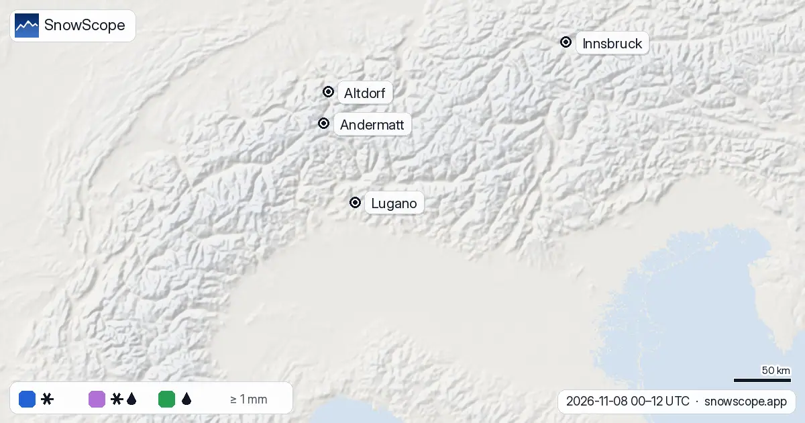

Alpi: dove nevicherà e dove pioverà, dall'8 al 10 novembre
Pioggia e neve tornano sulle Alpi da lunedì, ma l'aria resta mite. Dall'8 al 10 novembre il limite della neve dovrebbe trovarsi per lo più tra 2.190 e 2.850 m: nelle valli e sulle piste più basse pioverà, mentre sui ghiacciai e sulle vette più alte nevicherà.
Le previsioni neve in tempo reale per Andermatt nell'app SnowScopeAltezza neve, allerte powder e mappa 3D, gratis.
Il limite della neve sul terreno
La nostra nuova mappa confronta il limite neve previsto con il terreno reale, ora per ora, e colora ogni pendio in base a ciò che cade: blu per la neve, lilla per la neve bagnata o il nevischio, verde per la pioggia.
Sopra circa 3.000 m, il 90 % delle precipitazioni dovrebbe cadere come neve. A 2.500 m è una divisione in tre parti: 31 % neve, 38 % neve bagnata o nevischio e 31 % pioggia. A 2.000 m l'88 % cade come pioggia, e più in basso quasi tutto. Il valore medio del limite neve nelle ore di precipitazione è di 2.540 m.
Mostra i numeri
| Quota (m) | Neve % | Neve bagnata / nevischio % | Pioggia % |
|---|---|---|---|
| 500 | 0 | 0 | 100 |
| 750 | 0 | 0 | 100 |
| 1.000 | 0 | 0 | 100 |
| 1.250 | 0 | 0 | 100 |
| 1.500 | 0 | 1 | 99 |
| 1.750 | 1 | 3 | 96 |
| 2.000 | 2 | 10 | 88 |
| 2.250 | 10 | 26 | 64 |
| 2.500 | 31 | 38 | 31 |
| 2.750 | 62 | 33 | 5 |
| 3.000 | 90 | 10 | 0 |
| 3.250 | 100 | 0 | 0 |
| 3.500 | 100 | 0 | 0 |
| 3.750 | 100 | 0 | 0 |
| 4.000 | 100 | 0 | 0 |
Luogo per luogo
Ad Andermatt (vetta 2.963 m) la previsione dà 27 mm di precipitazioni dall'8 al 12 novembre. Nelle ore di precipitazione lo zero termico (0 °C) si trova intorno a 2.730 m, il che porta il limite neve intorno a 2.430 m: neve sulle piste alte, pioggia più in basso.
Nelle valli è pioggia: 36 mm ad Altdorf sul versante nord, 23,6 mm a Lugano a sud e 16,4 mm a Innsbruck. Il grafico della pioggia giornaliera mostra che la maggior parte cade il 9 e il 10 novembre.
Mostra i numeri
| Data | Andermatt (mm) | Altdorf (mm) | Lugano (mm) | Innsbruck (mm) |
|---|---|---|---|---|
| 8 novembre * | 0.0 | 0.0 | 0.3 | 0.0 |
| 9 novembre * | 6.2 | 11.3 | 0.3 | 2.4 |
| 10 novembre * | 8.5 | 16.6 | 3.6 | 6.9 |
| 11 novembre * | 2.3 | 0.3 | 1.5 | 0.0 |
| 12 novembre * | 10.0 | 7.8 | 17.9 | 7.1 |
Perché piove così in alto
L'aria si raffredda di circa 6,5 °C per ogni chilometro di altitudine. I fiocchi di neve che cadono attraverso aria più calda di 0 °C iniziano a sciogliersi e, poiché lo scioglimento richiede tempo, di solito diventano pioggia circa 300 m sotto lo zero termico (0 °C). È lì che tracciamo il limite neve, con una fascia di neve bagnata di 150 m per lato.
Quando una massa d'aria mite arriva da sud-ovest, lo zero termico (0 °C) sale e l'intero quadro si sposta più in alto sulle montagne. L'animazione mostra la stessa mappa a passi di 12 ore, così si può vedere quando il limite neve sale e scende.


Cosa significa per te
- Le previsioni cambiano: ricontrolla la mappa neve in tempo reale prima di partire.
- La neve bagnata e pesante sui ghiacciai può essere instabile: fuoripista, leggi sempre il bollettino valanghe ufficiale.
- Per le stazioni più basse, la pioggia su neve sottile e precoce di solito significa aspettare la prossima ondata di freddo.
Riferimenti e crediti
- Minder, J. R., Durran, D. R. and Roe, G. H. (2011). Mesoscale controls on the mountainside snow line. Journal of the Atmospheric Sciences 68, 2107-2127. doi.org/10.1175/JAS-D-10-05006.1
- NOAA, NASA, US Air Force (1976). U.S. Standard Atmosphere, 1976 (temperature falls 6.5 °C per km in the lower atmosphere). NASA-TM-X-74335. ntrs.nasa.gov/citations/19770009539
- American Meteorological Society, Glossary of Meteorology: 'Freezing level'. glossary.ametsoc.org/wiki/Freezing_level
- American Meteorological Society, Glossary of Meteorology: 'Melting layer'. glossary.ametsoc.org/wiki/Melting_layer
- Wallace, J. M. and Hobbs, P. V. (2006). Atmospheric Science: An Introductory Survey, 2nd edition. Academic Press / Elsevier. ISBN 978-0-12-732951-2.
- Open-Meteo.com forecast API, ECMWF IFS 0.25° model (CC BY 4.0): hourly precipitation and temperature on pressure levels. open-meteo.com/en/docs/ecmwf-api
- SnowScope snow model and forecast maps (SnowScope, Atlas Labs). snowscope.app/
Su questi numeri
Previsione del 7 novembre (ECMWF IFS via Open-Meteo): precipitazione oraria e profilo di temperatura su 8 livelli di pressione in 54 punti sulle Alpi. Lo zero termico (0 °C) è calcolato dal profilo; limite neve = zero termico (0 °C) meno 300 m, neve bagnata entro 150 m da esso. Interpolato tra i punti sul terreno, quindi gli effetti locali (inversioni di valle, rovesci intensi) non sono risolti. Le previsioni cambiano.
Cita questo articolo
Per ricerca, didattica o stampa: numeri e grafici sono liberamente riutilizzabili con licenza CC BY 4.0 citando così.
SnowScope (2026), Alpi: dove nevicherà e dove pioverà, dall'8 al 10 novembre, https://snowscope.app/blog/it/2026/11/alps-where-it-snows-where-it-rains-8-10-november-2026.html, consultato il 2026-11-08
SnowScope (Atlas Labs). (2026, November 8). Alpi: dove nevicherà e dove pioverà, dall'8 al 10 novembre. SnowScope snow reports. https://snowscope.app/blog/it/2026/11/alps-where-it-snows-where-it-rains-8-10-november-2026.html
BibTeX
@misc{snowscope2026alpswhereitsnowswhereitr,
author = {{SnowScope (Atlas Labs)}},
title = {Alpi: dove nevicherà e dove pioverà, dall'8 al 10 novembre},
year = {2026},
month = nov,
howpublished = {\url{https://snowscope.app/blog/it/2026/11/alps-where-it-snows-where-it-rains-8-10-november-2026.html}},
note = {Published 2026-11-08 10:53 UTC; accessed 2026-11-08}
}· CC BY 4.0 · Metodi, dati e strumenti →
Altri bollettini neve

Chantarella, Marguns, Piz Nair, White Turf: le parole che si sentono a St. Moritz, spiegate, e cosa dicono 46 inverni passati del nostro storico neve su ogni quota della Corviglia.

Dai contadini walser al Weißer Ring: le date che hanno fatto Lech Zürs, poi il nostro storico della neve allora e oggi, i primi quindici di 46 inverni passati contro gli ultimi quindici.

Sette giorni nella Silvretta Arena, uno alla volta: dove è la neve, quando passare a Samnaun e che cosa dicono 46 inverni passati della neve di Ischgl a tre quote.